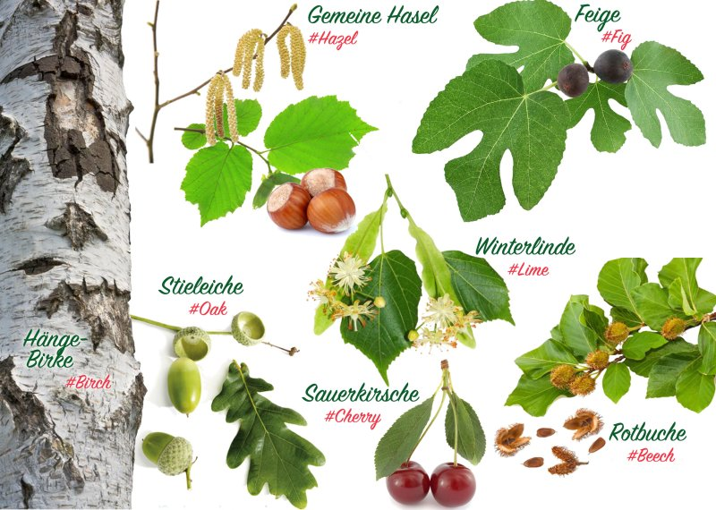
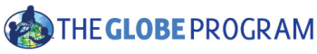
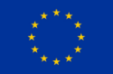
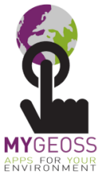
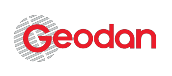
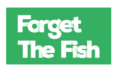

Die Umwelt im Zeitraffer
GrowApp ermöglicht es, Zeitraffer-Animationen von Bäumen, Gärten und ganzen Landschaften mit Ihrem Smartphone zu machen. Die App stellt die von Ihnen gemachten Fotos in einer Zeitraffer-Animation zusammen und zeigt damit die Veränderungen der Vegetation im Jahreszeitenverlauf oder sogar über Jahre hinweg. Es macht nicht nur Spaß diese Animationen anzufertigen und zu betrachten, die Daten helfen Wissenschaftlern/Wissenschaftlerinnen auch, den Einfluss des Klimawandels auf die Umwelt besser zu verstehen.
Sieben Baumarten stehen im Fokus
Helfen Sie der Klimaforschung besonders durch die Beobachtung dieser 7 Baumarten: Wenn Sie Fotos machen, geben Sie bitte den richtigen #tag im Feld “Beschreibung” an:
- Stieleiche (Quercus robur), #oak
- Gemeine Hasel (Corylus avellana), #hazel
- Rotbuche (Fagus sylvatica), #beech
- Hänge-Birke (Betula pendula), #birch
- Sauerkirsche (Prunus cerasus), #cherry
- Winterlinde (Tilia cordata), #lime
- Feige (Ficus carica), #fig
Mehr Information
Sie finden mehr Information und eine interaktive Karte mit allen Animationen unter: www.growapp.todaySchulen
Einen besonderen Zugang für Schulen finden Sie unter GLOBE phenology campaign..Entwicklung
Diese App basiert auf einer Idee von “The GLOBE Netherlands Foundation”. Die technische Entwicklung der App und der Website wurde von Geodan und Forget the fish realisiert.Kontakt
info@growapp.todaySupport
Die App wurde finanziell gefördert und unterstützt von dem Konsortium folgender Partner:




Unterstützung von
- Map client software
- OpenLayers 4.0, proj4
- Map server software
- Mapproxy
- Hintergrundkarte
- Openstreetmap, license
- Bildbearbeitung und Animation
- GraphicsMagic und GM for nodejs
- Photo browsing
- Photoswipe
- Weitere Kartenlayers
- Nasa worldview
- Layout und Icons
- Material Design Lite und Material Design Icons
- Native app framework
- Apache cordova und Android SDK und community camera plugin
- Datenbank
- Postgres und PostGIS
- Custom Server
- NodeJs
- Logo
- Basierend auf diesem Design